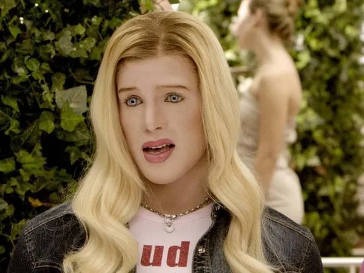
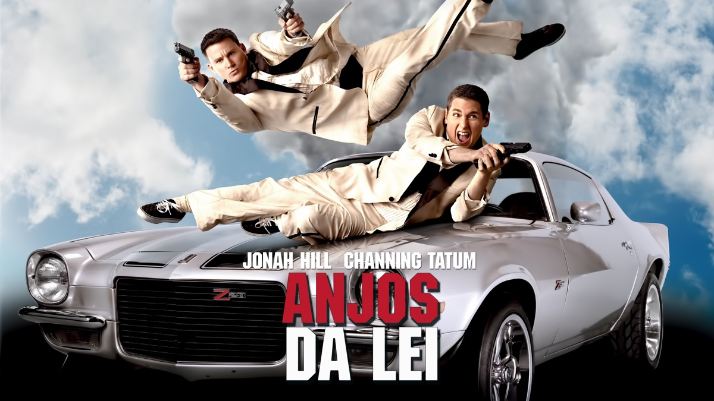
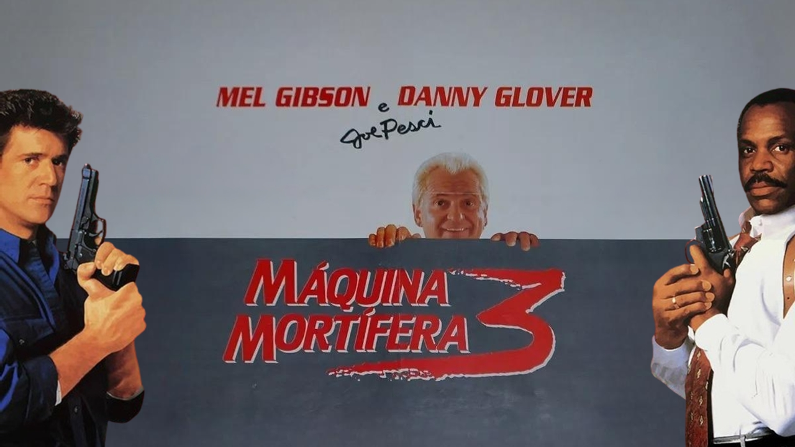
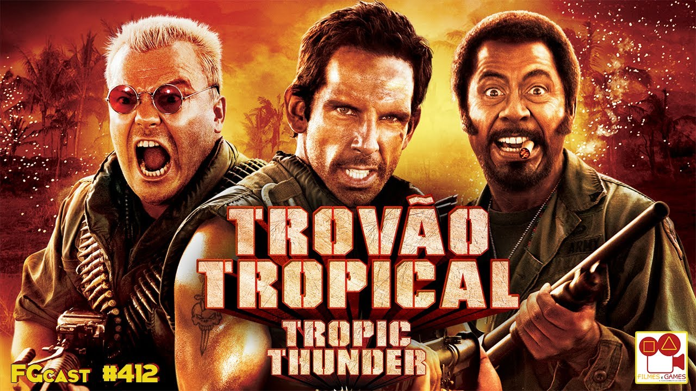

COMÉDIA
🏆 COMÉDIAS EM CARTAZ

Mean Girls: The Musical
O que achei?
SIMPLESMENTE ICÔNICO, é ref até hoje nas conversas entre minhas amigas.
🍿 MELHORES COMÉDIAS

As Branquelas
O que achei?
As branquelas é meu filme de comédia favorito! Já assisti várias vezes.
🎬 COMÉDIA E AÇÃO
Franquia Bad Boys 🤘

Bad Boys (1995) é um filme de comédia de ação policial dirigido por Michael Bay em sua estreia, estrelado por Will Smith (Mike Lowrey) e Martin Lawrence (Marcus Burnett). A trama foca em dois detetives de narcóticos de Miami com 72 horas para recuperar US$ 100 milhões em heroína roubados da delegacia, enquanto protegem uma testemunha de assassinato. O filme mistura cenas de tiroteio frenéticas com a comédia decorrente das personalidades opostas dos detetives.
Anjos da Lei 🔫

"Anjos da Lei" (21 Jump Street - 2012) é uma comédia de ação estrelada por Jonah Hill e Channing Tatum, que interpretam policiais inexperientes disfarçados de estudantes do ensino médio para desmantelar uma rede de tráfico de drogas sintéticas. Dirigido por Phil Lord e Christopher Miller, o filme foca no choque cultural entre os dois policiais e a geração atual, resultando em humor e ação, sendo uma releitura da série de TV dos anos 80.
MÁQUINA MORTÍFERA 💀

Máquina Mortífera" (1987), dirigido por Richard Donner, é um clássico filme de ação policial que define o subgênero "buddy cop". A trama acompanha o detetive veterano e cauteloso Roger Murtaugh (Danny Glover) sendo forçado a trabalhar com Martin Riggs (Mel Gibson), um policial instável e suicida após perder a esposa. Juntos, enfrentam uma rede de tráfico de drogas de ex-militares em Los Angeles, equilibrando humor e ação intensa.
TROVÃO TROPICAL ⚡

"Trovão Tropical" (2008), dirigido e estrelado por Ben Stiller, é uma comédia satírica sobre atores mimados filmando um longa de guerra no Vietnã. Quando o diretor os abandona na selva para um "realismo" forçado, eles enfrentam traficantes reais, confundindo atuação com sobrevivência. O elenco inclui Robert Downey Jr. e Jack Black.